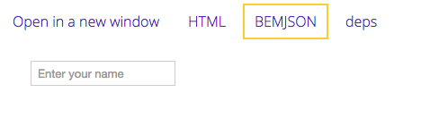

Dist bem-components: adding blocks to a page
Tutorial description
One of the distribution options of the bem-components library is pre-assembled files (bundles), connected using links in the page HTML. This is the quickest way to try out how the library blocks work.
Important: With this distribution option, you can't use all the advantages of a BEM project: redefinition levels, mixes and building a project on a per-entity basis. To use the library effectively, use the source or compiled distributions.
In this lesson, you will learn to:
You will connect the button and input blocks from the library to the greeting form as shown below. The result will be a form that displays the username in the greeting after the user clicks the button.

HTML code of the page with the greeting form.
To work with the examples, you need:
How to complete the lesson
There are several ways to complete this lesson: you can write code locally or use any web development framework (for example, JSFiddle, CodePen or JS Bin) that lets you edit and run the HTML, JavaScript and CSS code.
The examples are made in JSFiddle.
Connecting the library
There are several ways to get the pre-assembled library bundles. This document describes how to connect the files with Yandex CDN.
Flow for connecting a file using CDN: //yastatic.net/library-name/version/platform/file-name.
To connect library scripts and styles to the project, copy the links to the bundles to the <link> and <script> tags:
<!DOCTYPE html>
<html>
<head>
<meta charset="utf-8">
<title>bem-components as a library</title>
+ <link rel="stylesheet" href="https://yastatic.net/bem-components/latest/desktop/bem-components.css">
</head>
<body>
+ <script src="https://yastatic.net/bem-components/latest/desktop/bem-components.no-autoinit.js"></script>
</body>
</html>
Important: The library contains bundles without automatic initialization (
*.no-autoinit.js). They let you redefine the JavaScript implementation of the library blocks.
Working with blocks
To add a block to the page:
Choose a block View the block description on the bem.info site and chose a suitable example:
Get the HTML markup of the chosen block Use the example from the documentation to get the HTML. There are several ways to get the HTML code of the block:
If a new library version contains templates with changes in HTML markup, you will have to edit each block manually.
If updated templates in the new library version contain new markup, you won't need to edit templates manually. But the browser-generated markup is not indexed as well by search engines.
Using ready HTML
To get the prepared HTML markup for the block, go to the HTML tab in the block example:

Copy the code and insert it on the page:
<!DOCTYPE html>
<html>
<head>
<meta charset="utf-8">
<title>bem-components as a library</title>
<link rel="stylesheet" href="https://yastatic.net/bem-components/latest/desktop/bem-components.css">
</head>
<body>
<!-- The "hello" block for creating the greeting form -->
<form class="hello i-bem" data-bem='{ "hello": {} }'>
<div class="hello__greeting">Hello, %user name%!</div>
<!-- HTML code for the "input" block -->
+ <span class="input input_theme_islands input_size_m i-bem" data-bem='{"input":{}}'>
+ <span class="input__box">
+ <input class="input__control" placeholder="User name" autocomplete="off" autocorrect="off" autocapitalize="off" spellcheck="false">
+ </span>
+ </span>
<!-- HTML code for the "button" block -->
+ <button class="button button_theme_islands button_size_m button_type_submit button__control i-bem" data-bem='{"button":{}}' role="button" type="submit">
+ <span class="button__text">Click</span>
+ </button>
</form>
<script src="https://yastatic.net/bem-components/latest/desktop/bem-components.no-autoinit.js"></script>
</body>
</html>
The input and button blocks are displayed on the page. To show the name from the input field in the greeting phrase, describe the block behavior:
modules.define('hello', ['i-bem-dom', 'input', 'button'],
function(provide, bemDom, Input, Button) {
provide(bemDom.declBlock('hello', {
onSetMod: {
js: {
inited: function() {
this._input = this.findChildBlock(Input);
}
}
},
_onSubmit: function(e) {
e.preventDefault();
this._elem('greeting').domElem.text('Hello, ' + this._input.getVal() + '!');
}
}, {
lazyInit: true,
onInit: function() {
this._domEvents().on('submit', this.prototype._onSubmit);
}
}));
});
// The `init();` call. You need to call `init();` explicitly in order to initialize the blocks that are present in the HTML markup.
modules.require('i-bem-dom__init', function(init) { init(); });
To change the behavior of the blocks, use the i-bem.js framework included in the bem-core library. To write the i-bem.js code, you don't need to connect pre-assembled bundles of the bem-core library to the page, because they are already included in the build.
The project in JSFiddle.
Generating HTML in the browser
To generate the block's HTML markup in the browser, use the BEMHTML template engine that transforms BEMJSON to HTML. To do this, connect the bundle with the template engine (*.js+bemhtml.js):
<!DOCTYPE html>
<html>
<head>
<meta charset="utf-8">
<title>bem-components as a library</title>
<link rel="stylesheet" href="https://yastatic.net/bem-components/latest/desktop/bem-components.css">
</head>
<body class="page page_theme_islands">
<!-- The "hello" block for creating the greeting form -->
<form class="hello i-bem" data-bem='{ "hello": {} }'>
<div class="hello__greeting">Hello, %user name%!</div>
</form>
- <script src="https://yastatic.net/bem-components/latest/desktop/bem-components.no-autoinit.js"></script>
+ <script src="https://yastatic.net/bem-components/latest/desktop/bem-components.no-autoinit.js+bemhtml.js"></script>
</body>
</html>
To get theBEMJSON code of the block, go to the BEMJSON tab in the block example:

Copy the code and insert it in the template script on the page:
modules.define('hello', ['i-bem-dom', 'BEMHTML', 'input', 'button'],
function(provide, bemDom, BEMHTML, Input, Button) {
provide(bemDom.declBlock('hello', {
onSetMod: {
js: {
inited: function() {
bemDom.append(this.domElem, BEMHTML.apply([ // Выполнение шаблона
+ {
+ block: 'input',
+ mods: {
+ theme: 'islands',
+ size: 'm'
+ },
+ placeholder: 'User name'
+ },
+ {
+ block: 'button',
+ mods: {
+ theme: 'islands',
+ size: 'm',
+ type: 'submit'
+ },
+ text: 'Click'
+ }
]));
this._input = this.findChildBlock(Input);
}
}
},
_onSubmit: function(e) {
e.preventDefault();
this._elem('greeting').domElem.text('Hello, ' + this._input.getVal() + '!');
}
}, {
onInit: function() {
this._domEvents().on('submit', this.prototype._onSubmit);
}
}));
});
// The `init();` call
modules.require('i-bem-dom__init', function(init) { init(); });
The project in JSFiddle.
Result
The greeting form is ready. To make it look the same as in the picture in the beginning of the document, add new styles to the blocks.
Did something go wrong?
If you had difficulties creating the form, search for a solution on the forum. If you don't found an answer there, create a post with your question.